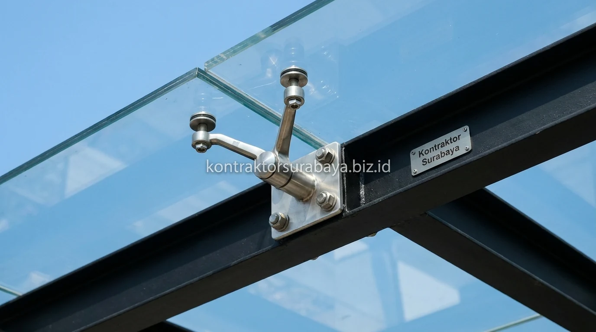

Kebutuhan naungan carport yang tidak hanya kokoh namun juga meningkatkan nilai estetika fasad rumah semakin meningkat di kawasan perumahan Gresik, seperti di PPS (Pondok Permata Suci), GKB (Gresik Kota Baru), Randuagung, hingga Menganti dan Driyorejo. Kanopi berbahan tempered glass kini menjadi tren terdepan yang paling diminati pemilik hunian modern berkelas.
1. Mengapa Kanopi Tempered Glass Diminati untuk Carport Modern
Tampilan transparan yang memberi kesan mewah dan modern, dipadukan kemampuan menahan panas matahari langsung, menjadi alasan utama kanopi tempered glass semakin diminati untuk carport rumah masa kini.
Dibanding kanopi dengan penutup solid seperti spandek atau polikarbonat buram, tempered glass memberi kesan lebih elegan karena tetap memungkinkan cahaya alami masuk secara maksimal ke area teras depan. Ruang carport tidak terasa gelap maupun pengap, sementara lapisan kaca khusus yang digunakan tetap mampu menahan sebagian besar radiasi panas ultraviolet yang biasanya merusak kilau cat kendaraan dalam jangka panjang.
2. Karakteristik Tempered Glass yang Membuatnya Aman untuk Kanopi
Kekuatan tekan yang tinggi, pola pecah berbentuk butiran kecil tanpa serpihan tajam, ketahanan terhadap perubahan suhu, dan lapisan pelindung UV adalah empat karakteristik yang membuat tempered glass sangat aman digunakan untuk kanopi atap:
- Kekuatan Tekan Tinggi: Melalui proses termal khusus, tempered glass memiliki daya tahan 4 hingga 5 kali lebih kuat dibanding kaca biasa non-tempered dengan ketebalan yang sama.
- Pola Pecah Granular (Safety Glass): Apabila mengalami benturan luar biasa melampaui batas toleransi, kaca akan hancur menjadi butiran kerikil tumpul tanpa serpihan tajam, sehingga meminimalkan risiko cedera fisik.
- Ketahanan Termal Ekstrem: Tidak mudah retak akibat ekspansi termal saat terpapar sengatan terik matahari Gresik yang intens di siang hari dan pendinginan mendadak saat hujan.
- Lapisan Pelindung Radiasi UV: Dilengkapi solar film atau laminasi PVB yang efektif memblokir spektrum sinar ultraviolet perusak material interior dan cat mobil.
3. Kombinasi Rangka yang Cocok untuk Kanopi Tempered Glass
Rangka baja WF, rangka hollow galvanis tebal, rangka stainless steel, dan sistem spider fitting adalah pilihan rangka yang umum dipadukan dengan atap tempered glass sesuai konsep arsitektur dan anggaran:
- Rangka Baja WF (Wide Flange): Memberi kekuatan struktural kokoh tak tertandingi untuk kanopi berbentang lebar tanpa banyak tiang penyangga tengah, menciptakan kesan industrial-mewah.
- Rangka Stainless Steel 304: Menghadirkan kesan kilau premium dengan ketahanan korosi maksimal di lingkungan pesisir berhawa garam.
- Rangka Hollow Galvanis Finishing Duco: Pilihan paling populer yang fleksibel, tahan karat, dan memiliki bobot seimbang dengan pilihan warna cat hitam doff atau dark grey minimalis.
- Sistem Spider Fitting: Menghubungkan kaca menggunakan klem cakar spider stainless tanpa rangka kasau yang padat, menciptakan tampilan kanopi melayang (floating glass canopy) yang futuristik.

4. Bagaimana Kanopi Kaca Melindungi Cat Mobil dari Kerusakan Akibat Panas?
Lapisan tempered glass dengan pelapis UV menyaring sebagian radiasi panas matahari sebelum mencapai permukaan kendaraan, sehingga membantu memperlambat proses oksidasi dan pemudaran warna cat akibat paparan sinar matahari langsung setiap hari.
Paparan matahari langsung dalam waktu lama menjadi salah satu penyebab utama lapisan pernis (clear coat) mobil menjadi kusam, timbul bercak jamur air (waterspot), dan retak rambut pada karet wiper. Kanopi tempered glass dengan solar protection memastikan mobil tetap teduh, temperatur kabin stabil, dan usia tampilan eksterior kendaraan jauh lebih awet.
5. Perawatan Kanopi Tempered Glass agar Tetap Jernih dan Estetik
Pembersihan rutin dari debu dan noda air hujan menggunakan cairan pembersih kaca khusus membantu menjaga kejernihan permukaan tempered glass agar tampilan kanopi tetap estetik dalam jangka panjang.
Noda air hujan yang dibiarkan mengering di bawah terik matahari dapat meninggalkan kerak mineral silika yang sulit dihilangkan apabila tidak segera dibilas. Perawatan berkala setiap 1-2 bulan dengan teknik wiper squeegee atau aplikasi pelapis nano ceramic coating kaca (hydrophobic effect) akan membuat air hujan langsung mengalir tuntas membawa debu kotoran secara alami.
6. Kesalahan Umum dalam Memilih dan Memasang Kanopi Tempered Glass
Terdapat beberapa kesalahan fatal yang sering dilakukan kontraktor non-spesialis saat memasang kanopi kaca:
- Salah Memilih Ketebalan Kaca: Menggunakan kaca 5-6 mm yang terlalu tipis untuk bentang luas berisiko menimbulkan lendutan (deflection) berbahaya dan getaran hebat saat diterpa angin kencang.
- Mengabaikan Kemiringan Drainase (Slope): Sudut kemiringan kanopi kurang dari 5-8 derajat menyebabkan genangan air sisa hujan membebani struktur kaca dan memicu lumut.
- Rangka Tanpa Perhitungan Beban: Kaca tempered memiliki bobot mati berkisar 25-30 kg/m²; tanpa perhitungan profil rangka yang presisi, struktur berisiko melengkung dalam waktu singkat.
- Kaca Tanpa Sertifikasi SNI / Tempering Standar: Menggunakan kaca tempered non-standar tanpa logo laser print tempered resmi berisiko pecah mendadak akibat cacat termal internal (spontaneous breakage).
"Keanggunan kanopi tempered glass terletak pada presisi perakitan rangka dan ketepatan pemilihan ketebalan kaca bersertifikat safety glass untuk ketahanan puluhan tahun."
Setiap carport memiliki ukuran dan orientasi matahari yang berbeda, sehingga pemilihan ketebalan kaca dan jenis rangka perlu disesuaikan melalui survei langsung. Lihat referensi visual lebih lengkap pada galeri proyek kami, atau pelajari cakupan layanan pada halaman jasa renovasi bangunan.